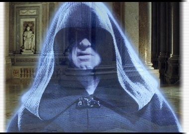

达斯·西帝斯
经过千年的蛰伏和等待，西斯（Sith）再一次回到了人们的视野当中，他们的数量仍然遵循着达斯·贝恩（Darth Bane）立下的传统，仅仅两名。而其中最强大的就是达斯·西帝斯（Darth Sidious），这名头脑精明，冷酷无情的天才魔鬼掌握着黑暗原力的强大力量，以及无数西斯古老的知识，装备和神器。但他最犀利的武器却也许是对银河政治的精通，因此才能推动宇宙不断向对西斯有利的方向发展。没人知道西帝斯是如何成为一名西斯的，或许他投身西斯以前就已经走上了黑暗之路，又或许他发现了某个古代西斯的神器，进而开启了他的黑暗天赋并引起了哪个西斯的注意。不管如何，达斯·西帝斯证明了自己的是名合格的学生。靠着自己狡诈的头脑，他在公众面前伪装成一名值得信任的好公民，但却在暗地里腐蚀着共和国的基石。
达斯·西帝斯计划把共和国变成对抗杰迪的武器，他很清楚单靠自己很难消灭全部杰迪～尤其是在那卜（Naboo）之战中损失了自己的学徒达斯·莫尔（Darth Maul）后，他必须先寻找一名新学徒，才能享受看着杰迪一个个死亡的乐趣。
达斯·西帝斯
男性人类
贵族（Noble）3级/黑暗皈依者（Dark Side Devotee）3级/西斯侍奉者（Sith Acolyte）3级/西斯大君（Sith Lord）9级
先攻权加值：+0
防护等级：27（等级+17）
速度：10米
体力/生命：124/13
攻击：+16/+11/+6*（近战，4d8/19-20，光剑）或者+15/+10/+5（远程）
特性：恩惠（Call in Favor）+2，自我鼓舞+1，黑暗护符（Dark Side Talisman）+2，获取资源（Resource Access），额外护卫（Exceptional Minions）
豁免：坚韧+13，反射+11，意志+19
体形：中型
原力点（Force Point）：9
黑暗原力点（Dark Side Point）：32
声望：16
属性：力量11，敏捷11，体质13，智力18，感知16，魅力15
挑战等级：I
随身装备：光剑*（Lightsaber），西斯全身袍（Sith Holocron），私人交通工具（Private Transport）
*达斯·西帝斯自制光剑
技能：唬骗+12，使用电脑+9，手艺（制造光剑）+6，交涉+18，收集情报+18，威吓+17，知识（杰迪）+10，知识（那卜）+6，知识（政治） +17，知识（西斯）+15，读写基本语，读写伯斯语（Bothan），读写西斯秘语（Sith），观言察色+13，听说基础语，听说伯斯语，听说西斯秘语
原力技能：原力暗示（Affect Mind）+13，黑暗炼金术（Alchemy）+17，控制精神（Control Mind）+12，原力读心（Empathy）+17，原力预知（Farseeing）+23，原力恐惧（Fear）+16，原力防御（Force Defense）+16，原力碾压（Force Grip）+16，治疗自己（Heal Self）+14，移动物体（Move Object）+12，感应原力（See Force）+18，心灵感应（Telepathy）+20
专长：擅长异种武器（光剑），原力敏感（Force Sensitive），技能专攻（原力预知），技能专攻（原力恐惧），技能专攻（知识：政治），技能专攻（心灵感应），信誉良好（Trustworthy），擅长武器（激光枪，简单武器）
原力专长：改变系原力（Alter），自控系原力（Control），驱散能量（Dissipate Energy），抽取原力（Drain Force），原力闪电（Force Lightning），精通原力（Force Mastery），原力支援（Force Mind），感应系原力（Sense），西斯巫术（Sith Sorcery）